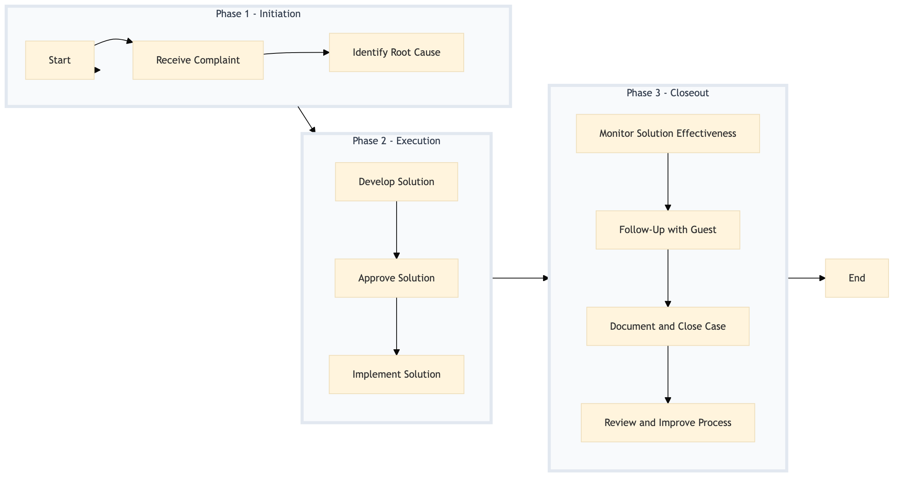

| Role | Steps |
|---|---|
| Front Desk Agent | 1.1 2.3 3.2 |
| Guest Services Manager | 1.2 2.1 3.1 3.3 |
| General Manager | 2.2 |
| Housekeeping Staff | 2.3 |
| Concierge | 3.2 |
| Step | Name | Role | System | Input | Output | KPI | Dec? | Exc? | Pain Point / Risk |
|---|---|---|---|---|---|---|---|---|---|
| 1.1 | Receive Complaint | Front Desk Agent | Oracle OPERA Cloud | Guest's complaint via phone, email, or in-person | Complaint logged in Oracle OPERA Cloud | Less than 5 minutes to log the complaint | N | Y | Handling complaints efficiently while maintaining guest satisfaction |
| 1.2 | Identify Root Cause | Guest Services Manager | Oracle OPERA Cloud, IDeaS G3 RMS | Logged complaint details | Root cause analysis report | Less than 10 minutes to identify the root cause | N | Y | Accurately identifying the underlying issue |
| 2.1 | Develop Solution | Guest Services Manager | Oracle OPERA Cloud, SynXis CRS | Root cause analysis report | Solution proposal | Less than 15 minutes to develop a solution | N | Y | Creating an effective and feasible solution |
| 2.2 | Approve Solution | General Manager | Oracle OPERA Cloud, Workday HCM | Solution proposal | Approved solution | Less than 30 minutes to approve the solution | Y | N | Obtaining approval for the proposed solution |
| 2.3 | Implement Solution | Front Desk Agent, Housekeeping Staff | Oracle OPERA Cloud, Oracle MICROS Simphony | Approved solution | Solution implemented and documented | Less than 20 minutes to implement the solution | N | Y | Executing the solution promptly and effectively |
| 3.1 | Monitor Solution Effectiveness | Guest Services Manager | Oracle OPERA Cloud, Microsoft Power BI | Solution implementation details | Effectiveness report | Less than 5 minutes to monitor the solution | Y | N | Ensuring the solution resolves the guest's issue |
| 3.2 | Follow-Up with Guest | Front Desk Agent, Concierge | Oracle OPERA Cloud, Book4Time | Effectiveness report | Guest feedback | Less than 10 minutes to follow up with the guest | N | Y | Ensuring guest satisfaction post-resolution |
| 3.3 | Document and Close Case | Guest Services Manager | Oracle OPERA Cloud, Marriott Bonvoy CRM | Guest feedback | Closed case in Oracle OPERA Cloud | Less than 5 minutes to document and close the case | N | Y | Properly documenting the resolution process |
| 3.4 | Review and Improve Process | Revenue Manager, Guest Services Manager | Oracle OPERA Cloud, Salesforce | Closed case details | Process improvement recommendations | Less than 1 hour to review and improve the process | Y | N | Continuously improving complaint handling procedures |
This process outlines how to handle guest complaints and achieve service recovery at a full-service Marriott hotel using Oracle OPERA Cloud PMS and other key systems.